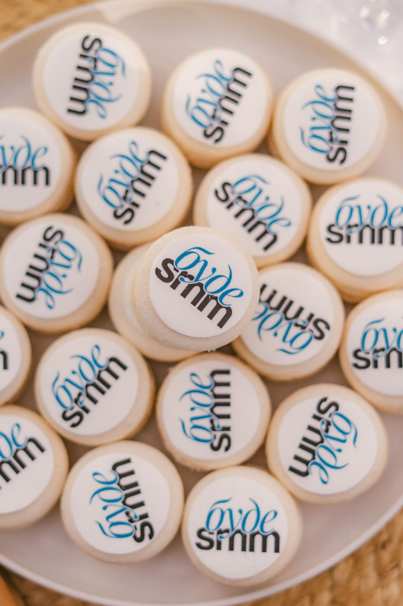

За 3 місяці навчання опануєш професію SMM-спеціаліста, навчишся знаходити клієнтів та продавати свої послуги
Забронювати місце
Тут ти зможеш дізнатися вартість, порівняти тарифи й обрати свій формат
Отримати безкоштовну стратегію
Індивідуально для тебе розроблений план виходу на 50 000 грн за місяць у SMM
700+ учнів попередніх потоківпрактика на проєктахматеріали Lucky Agencyстарт 29 листопада700+ учнів попередніх потоківпрактика на проєктахматеріали Lucky Agencyстарт 29 листопада
700+учнів попередніх потоків
3місяці інтенсивної практики
7років досвіду авторки
Для кого створений «БУДЕ SMM»
Для новачків
Якщо хочеш опанувати нову професію, почати працювати у творчій сфері, зрозуміти, як отримати сильний практичний досвід та почати заробляти на SMM
Для тих, хто вже проходив навчання
Якщо маєш теоретичну базу, але знань поки недостатньо, щоб самостійно вести проєкти, будувати стратегії та давати результат клієнтам
Для тих, хто хоче змінити формат роботи
Якщо втомився від роботи за графіком і шукаєш професію, яка дозволяє працювати онлайн, самостійно організовувати час і брати проєкти з різних міст та країн
Для SMM-спеціалістів із досвідом
Якщо хочеш систематизувати знання, підвищити кваліфікацію, аргументувати вищий чек, працювати з проєктами мрії або перейти від фрилансу до власної команди
Для власників бізнесу
Якщо хочеш самостійно просувати свою справу в соцмережах або навчитися правильно ставити задачі SMM-спеціалістам, оцінювати їхню роботу й ефективно використовувати бюджет на просування
Опануєш аналіз бізнесу і цільової аудиторії, побудову стратегії, створення контенту та оцінку результатів просування
Збереш власні роботи для портфоліо і підготуєш пропозицію, з якою зможеш знаходити потенційних клієнтів
Що матимеш після навчання
Опанування професії SMM та перших клієнтів
Навички аналізу ринку, конкурентів і цільової аудиторії
Уміння створювати контент-стратегії та таргет-стратегії під задачі бізнесу
Розуміння каналів і методів просування
Навички створення текстів, відео та візуального контенту
Упакований профіль та сильне портфоліо для просування своїх послуг
План пошуку клієнтів і система продажу своїх послуг
Нові знайомства та своє ком’юніті в діджитал-сфері
Розуміння, як виходити на високий чек, масштабуватися та створити власну команду
Чому «БУДЕ SMM»?
Практика, а не лише теорія
Знання одразу закріплюються у завданнях і роботі над проєктами
Актуальні кейси діючої агенції
У програмі використовуються реальні ситуації, матеріали і рішення власної агенції Lucky Agency
Експерти з окремих напрямків
Таргет, TikTok, мобільна зйомка, дизайн, закордонний ринок, CEO, ФОП та інші теми розкривають запрошені спеціалісти-практики
Навчання для різних рівнів
Можна почати з нуля, систематизувати наявний досвід або обрати апгрейд після попередніх потоків
Авторка курсу — Аміна Кривенда
“
7 років практичного досвіду у SMM і маркетингу
Робота з понад 70 бізнесами в різних нішах
Власна SMM-агенція Lucky Agency
Понад 700 учнів на попередніх потоках
Реальні кейси, робочі документи та внутрішні процеси агенції
~20 модулів і 7 запрошених експертів
Запрошені спікери
Катерина Сарданова
психологиня · страхи та установки
Анна Лащенко
створення контенту та мобільна зйомка
Анастасія Галич
дизайн у Figma
Кирил Благоверов
таргетована реклама
Вікторія Колесник та Ілля Косенко
TikTok
Ксенія Кузина
закордонний ринок
Юлія Корнічук
відкриття ФОП
Додатково
під час навчання
Щотижневі майстермайнди
Перевірка домашніх завдань
Практикум із продажів
Майстер-клас із мобільної зйомки
Зустріч із психологом
Q&A-сесія з таргетологом
Навчальні челенджі
Чат учасників
Канал з вакансіями
Неформальні офлайн-зустрічі
Випускний у Києві
Індивідуальні Zoom-розбори
Як проходитиме навчання?
Дивишся уроки
Матеріали поступово відкриваються на навчальній платформі. Уроки можна проходити у зручний час, завантажувати і переглядати повторно
Виконуєш практичні завдання
Закріплюєш знання на конкретних задачах і поступово збираєш власні роботи
Отримуєш зворотний зв’язок
За кожним учнем закріплений куратор, домашні завдання перевіряються, а питання й труднощі розбираються під час зустрічей
Формуєш портфоліо
Оформлюєш свої роботи так, щоб їх можна було показати потенційному клієнту
Готуєшся до продажу послуг
Формуєш пропозицію, пакети послуг, вартість і план пошуку клієнтів
Програма курсу
Торкнись номера модуля — програма з’явиться нижче
Початок
Організація та система навчання
Мислення, рішення й дії, які приводять до результату
Ефективна постановка цілей
Робота зі страхами
з експертом: психологиня Катерина Сарданова
Страх почати працювати
Страх шукати клієнтів і продавати послуги
Робота з установками
Додаткова Zoom-лекція з психологом
Складові SMM
SMM на сучасному ринку
З чого складається робота SMM-спеціаліста
Різні типи просування бізнесу й бренду
Основи маркетингу та роль стратегії
Різновиди ніш у SMM
Основи маркетингу
Визначення цілей бізнесу
Аналіз ринку та ніші
Аналіз конкурентів
Аналіз і сегментація цільової аудиторії
Потреби, болі, заперечення та мотивація клієнтів
Формування позиціонування
Побудова упаковки
Формування упаковки профілю
Візуальна концепція
Позиціонування та ключові повідомлення
Побудова контентної частини маркетингу
Контент-стратегія
Рубрикатор контенту
SMM-стратегія та її структура
Побудова легкої стратегії за 8 кроків
Побудова контент-плану
Воронки продажів і способи їх використання
Зв’язок між контентом і задачами бізнесу
Стратегія просування
Методи та канали просування
Побудова стратегії просування
Співпраця з блогерами
UGC-маркетинг
Конкурсні механіки
Органічне та платне просування
Створення контенту
з експертом: Анна Лащенко
Налаштування камери, техніка мобільної зйомки
Світло, реквізит і фони
Організація контент-зйомки
Монтаж відео / Обробка фото
Корисні застосунки для роботи з контентом
Копірайтинг і stories
Де знаходити ідеї для контенту
Копірайтинг у SMM
Тексти під різні задачі
Алгоритми та формати stories
Побудова сторітелінгу
Сенси, оформлення та корисні застосунки
Дизайн у Figma
з експертом: Анастасія Галич
Основи роботи у Figma
Створення дизайну для соцмереж
Робота з плагінами
Огляд матеріалів та інструментів для дизайну
Таргетована реклама
з експертом: Кирил Благоверов
Роль таргету в загальній стратегії просування
Підготовка проєкту до запуску реклами
Створення рекламних креативів і оферів
Вибір аудиторій на основі проведеного аналізу
Аналіз рекламних показників та оптимізація кампаній
Аналітика та звітність
Показники, які потрібно відстежувати
Як аналізувати контент і просування
Звіт як стратегічний інструмент
Як презентувати результати клієнту
Як використовувати звітність для продовження співпраці
TikTok
з експертом: Вікторія Колесник та Ілля Косенко
Успішний старт у TikTok
Алгоритми платформи
Контент-стратегія
Формати відео
Лідогенерація через TikTok
Окремий Zoom-розбір і брейншторм
Упаковка власного профілю
Упаковка профілю SMM-спеціаліста
Експертний та особистий контент
Стимулювання заявок через Instagram
Додаткова Zoom-лекція про особистий бренд
Пошук клієнтів і продажі
Формування товарної лінійки
Пакети послуг і ціноутворення
Упаковка портфоліо
Види консультацій
Пошук клієнтів онлайн та офлайн
Система продажів та проведення зідзвонів / переговорів
Робота із запереченнями
Практикум із продажів
Закордонний ринок і масштабування
з експертом: Ксенія Кузина
Особливості роботи на закордонному ринку
Конкуренція та ціноутворення
Канали й способи пошуку клієнтів
Організація робочих процесів
Тайм-менеджмент
Пошук і підбір помічника
Набір команди
Перехід від спеціаліста до власника команди або агенції
Створення власних продуктів: гайдів, чеклістів, консультацій і курсів
ШІ та комунікація з клієнтами
ChatGPT як робочий інструмент
Промпти для контенту, текстів та ідей
Використання нейромереж для аналітики й організації роботи
Комунікація з клієнтом на різних етапах співпраці
Робота з правками та складними ситуаціями
Відкриття ФОП
з експертом: Юлія Корнічук
Коли потрібно відкривати ФОП
Реєстрація та вибір форми роботи
Оподаткування
Базові організаційні питання легальної роботи
Досвід Lucky Agency, який зможеш застосувати
Реальні кейси
Робочі матеріали
Операційні процеси
Реальні кейси
Розбереш задачі бізнесів, логіку вибору стратегії, дії команди та висновки з результатів. Серед кейсів агенції:
500нових клієнтів для пункту обміну валют за місяць
3клієнти на 200 000 грн для виробництва за один тиждень
×5зростання продажів бренду одягу через зміну контенту та стратегію просування
Робочі матеріали
Побачиш приклади стратегій, таблиць, контент-планів, звітів та інших документів, які використовуються в роботі з клієнтами
Операційні процеси
На розборах з операційним директором Lucky Agency дізнаєшся, як:
розподіляти відповідальністьпередавати задачіконтролювати строкиорганізовувати роботу командивести декілька проєктівзберігати якість під час масштабування
Матеріали, які залишаться з тобою

Конспекти до кожної лекції
Чеклісти з аналізу цільової аудиторії та конкурентів
Шаблони контент-планів і стратегій
Шаблони stories, текстів і звітів
Чекліст із побудови воронки продажів
Матеріали для запуску реклами
Гайди зі спілкування з клієнтами
Матеріали для підготовки до співбесід
Рекомендації з розвитку особистого бренду
Бонусні лекції
Записи спільних зустрічей
Це матеріали, які можна адаптувати та використовувати у власних проєктах
Результати попередніх потоків
700+«БУДЕ SMM» уже пройшли понад 700 учнів
Уже проходив «БУДЕ SMM»?
Обери апгрейд під свій рівень. Отримай доступ до нових модулів, агентських кейсів, робочих матеріалів, практичних завдань і розборів
Можна зосередитися саме на тому, що потрібно зараз:
підвищенні чекапродажі послугкомунікації з клієнтамианалітиці та стратегіїорганізації процесівделегуванні та наборі командимасштабуванні в агенцію
Так. Програма починається з основ SMM і маркетингу та поступово переходить до стратегії, контенту, просування й роботи з клієнтами
Чи буде курс корисним, якщо вже працюєш у SMM?
Так. Зможеш систематизувати знання, посилити стратегію й аналітику, навчитися аргументувати вищий чек, покращити комунікацію з клієнтами та розібратися з масштабуванням
Чи можна поєднувати навчання з роботою?
Так. Основні уроки доступні в записі. Для практики, виконання завдань і додаткових зустрічей потрібно окремо планувати час протягом тижня
Як проходитиме практика?
У форматах із практикою виконуватимеш завдання на проєкті, застосовуватимеш матеріали з уроків і поступово формуватимеш роботи для портфоліо
Чи допоможуть із пошуком клієнтів?
У програмі є окремий блок із пошуку клієнтів, портфоліо, продажів і переговорів. Із перших тижнів отримаєш план пошуку замовлень. Щотижня зідзвон з Аміною, на яких ви разом будете будувати покроковий план пошуку клієнта
Що отримають випускники попередніх потоків?
Можна обрати апгрейд із новими модулями, кейсами, матеріалами, завданнями й розборами без повторного проходження всієї базової програми
Як дізнатися вартість?
Натисни «Обрати тариф» або «Забронювати місце». У переписці отримаєш актуальні ціни, наповнення та варіанти оплати
Зроби наступний крок у SMM
“
За 3 місяці пройди шлях від розрізнених знань до системного розуміння професії, власних робіт для портфоліо та готовності продавати свої послуги